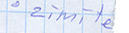
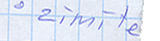
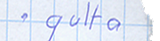
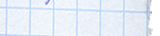
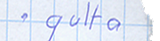
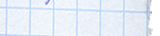

Kaķa šūpulis


 

 




- Autors:Kurts Vonnegūts
- Izdevniecība:"Liesma"
- Izdošanas gads(LV):1973
- Izdošanas gads(orģ.):1963
- Orģinālais nosaukums:
Cat's cradle
Kaķa šūpulis
DIENA, KAD PASAULEI PIENĀCA GALS
Sauciet mani par Jonu. Mani vecāki tā izdarīja vai gandrīz izdarīja. Viņi nosauca mani par Džonu.
Jona — Džons ... Pat ja es būtu nosaukts par Semu, es tik un tā būtu Jona, ne jau tāpēc, ka esmu nesis nelaimi citiem, bet gan tāpēc, ka nezin kāds vai kas liek man pastāvīgi zināmā laikā būt zināmā vietā. Transporta līdzekļi un iemesli, gan gluži parasti, gan ērmīgi — par visu tiek gādāts. Un it kā pēc plāna noteiktā sekundē, noteiktā vietā parādās šis Jona.
Uzklausieties:Kad es biju jaunāks — pirms divām sievām, pirms 250000 cigarešu, pirms 3000 litriem alkoholisku dzērienu ...
Kad biju daudz jaunāks, es sāku vākt materiālus grāmatai, kura sauktos Diena, kad pasaulei pienāca gals.
Tai vajadzēja but dokumentālai grāmatai.Tai vajadzēja sniegt atskaiti par to, ko darījuši ievērojami amerikāņi todien, kad Japānā tika nomesta pirmā atombumba uz Hirosimas pilsētu.

Jānis Rullis 2009